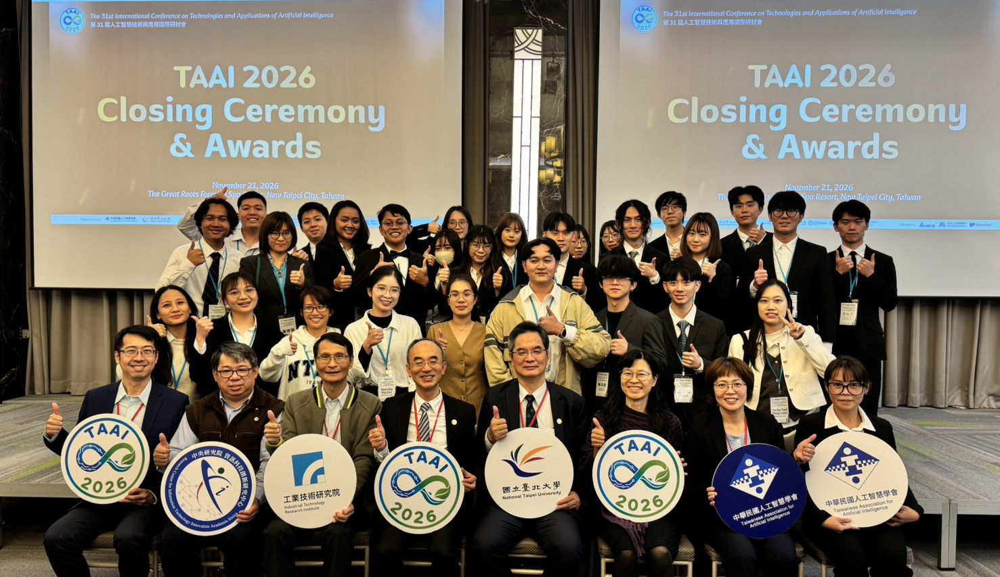
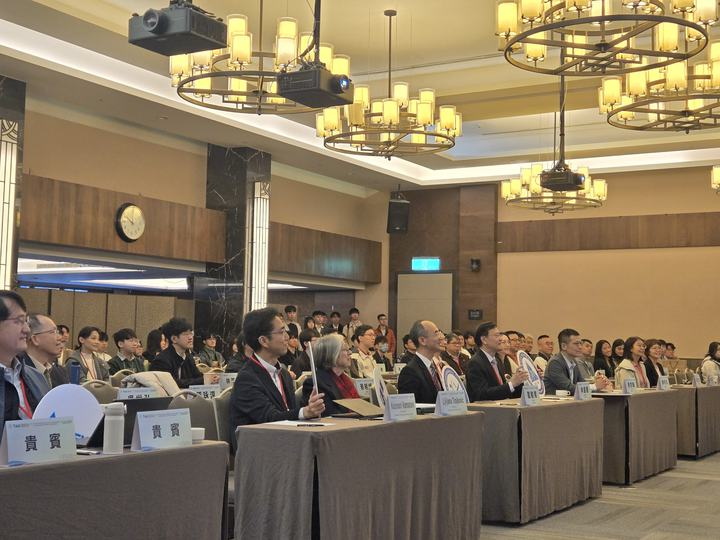
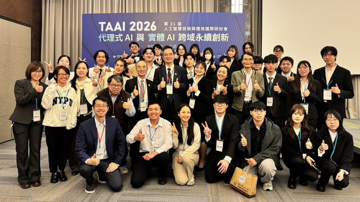
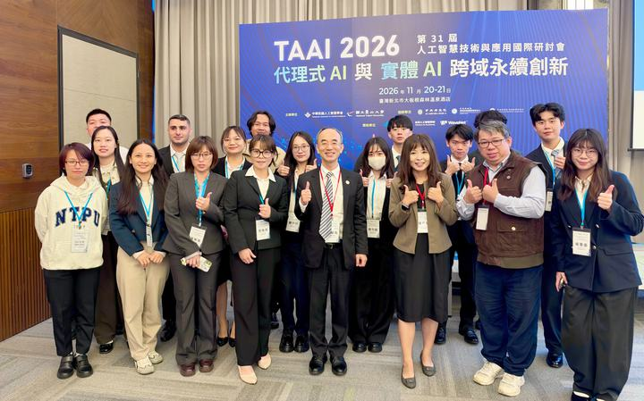

NEW TAIPEI CITY, Taiwan, November 22, 2026 — The 31st International Conference on Technologies and Applications of Artificial Intelligence (TAAI 2026) took place on November 20–21 at the Great Roots Forestry Spa Resort in Sanxia District, New Taipei City. Jointly organized by the Taiwanese Association for Artificial Intelligence (TAAI) and National Taipei University (NTPU), this year’s conference, themed “Agentic AI & Physical AI for Sustainable Innovation,” received 205 submissions and featured 157 papers in 21 sessions. Their 450 authors came from 13 countries and regions and about 90 institutions, with authors from Japan contributing to 23 papers.
The program included 69 international-track and 88 domestic-track papers in 14 oral and 7 poster sessions, covering large language models, agentic AI, computer vision, speech processing, reinforcement learning and intelligent applications. International Track papers will be published by Springer as post-proceedings in Communications in Computer and Information Science (CCIS). To reduce waste, the conference printed no paper handbook; the program, abstracts and handbook are available on the conference website.
Four keynote talks
- Prof. Philip S. Yu (UIC Distinguished Professor, University of Illinois Chicago; ACM, IEEE and AAAS Fellow): Riemannian geometry for next-generation graph foundation models. Chair: Prof. Chih-Hua Tai, National Taipei University
- Prof. Yu Tsao (Research Fellow, Academia Sinica, Taiwan): neural speech enhancement and assessment for assistive oral communication. Chair: Prof. Ling-Jyh Chen, Academia Sinica
- Prof. Ljiljana Trajkovic (Simon Fraser University, Canada; IEEE Fellow): AI-driven network traffic analysis for anomaly detection and cybersecurity. Chair: Prof. Chan-Yun Yang, Dean, College of Electrical Engineering and Computer Science, National Taipei University
- Prof. Kazunori Komatani (SANKEN, The University of Osaka, Japan): long- and short-term adaptation in dialogue systems. Chair: Prof. Hung-Yi Lee, National Taiwan University
Panel, tutorials and the Young Woman Star Session
- Panel, “Adaptive AI in the Real World”: moderated by Prof. Ling-Jyh Chen, with Prof. Yu Tsao, Prof. Ljiljana Trajkovic and Prof. Kazunori Komatani.
- Agentic AI Tutorial 1: Ethan Yin-Hao Tsui, founder of HaoAI Future Technology, on deploying agentic AI in the enterprise. Chair: Prof. Min-Yuh Day.
- Agentic AI Tutorial 2: Prof. Hao-Chiang Koong Lin, National University of Tainan, on storyboarding and camera movement in AI video creation. Chair: Prof. Ling-Yen Pan.
- Physical AI Tutorial: Prof. Shao-Hua Sun, National Taiwan University, on imitation learning with diffusion models for embodied agents. Chair: Prof. Min-Chun Hu.
- Young Woman Star Session: convened by Prof. Lun-Wei Ku and moderated by Prof. Min-Chun Hu, with Dr. Yun-Hsuan Lien (Academia Sinica), Prof. Meng-Fen Chiang and Prof. Woan-Shiuan Chien (National Yang Ming Chiao Tung University) on reinforcement learning, trustworthy LLM reasoning and affective AI.
Invited sessions: NSTC, industry and sustainability
- NSTC Intelligent Computing program: chaired by program convener Prof. Chia-Hui Chang. Prof. Ming-Syan Chen (National Taiwan University), Prof. Vincent S. Tseng (National Yang Ming Chiao Tung University) and Prof. Hung-Yu Kao (National Tsing Hua University) reported on their research projects; the program also presented its plans and exhibited 13 project posters on Day 2.
- Industrial Track 1: chaired by Ming-Shun Tsai, Taiwan AI Academy, with Shih-Chieh Huang (FamilyMart Taiwan) and Shihyu Alex Chu (Market Intelligence & Consulting Institute, III).
- Industrial Track 2: chaired by Prof. Chien-Ping Chung, National Taipei University of Technology, with Kai-Feng Chien (Jigexian) on voice avatars and mixed reality, and Chien-Wei Ho (Lychee Intelligence) on permissions, human review and audit trails for AI agents.
- AI CUP: chaired by Prof. Shih-Hung Wu, Chaoyang University of Technology, with Prof. Min-Yuh Day and Prof. Hong-Jie Dai on competition design, ESG commitment verification and turning competition results into publications.
- Cross-Domain AI Sustainable Innovation (three sessions): chaired by Prof. Min-Yuh Day, Dean Sherry Chia-Ying Chan and Distinguished Prof. Chih-Chien Wang, with talks by Dr. Shr-Yi Chin, Prof. Chien-Ping Chung, Prof. Haobijam Basanta, Prof. Wei-Lun Chang, Prof. Chih-Chien Wang, Dr. Shih-Chieh Chien (Taiwan Law Foundation) and Prof. Tse-Ping Dong (MARX Biotech).
Competitions, thesis awards and young researchers
- TAAI Master’s and Doctoral Thesis Awards: 8 award-winning theses presented, chaired by Prof. Chia-Ru Chung, National Central University.
- High school sessions: organized by Prof. Jen-Wei Huang, National Cheng Kung University, with 4 long and 6 short papers.
- NAPAI Agentic AI Innovation Competition for Campus Applications, finals and awards (partner event, organized by the NAPAI program office): chaired by Prof. Chia-Hui Chang, with live demos by 16 teams.
- The Computer Game Competition was held online, and TAAI held its General Assembly on November 20.
21 paper sessions
Paper sessions ran in parallel in Room A (7 international oral sessions), Room B (7 domestic oral sessions) and the poster area (7 poster sessions), led by 28 session chairs. Topics ranged from LLMs and NLP, computer vision and AI for health to AI agents and RAG, speech, security and trustworthy AI, game AI, data mining, optimization and reinforcement learning, and AI in education. The full program lists every session, room and chair.
28 awards and online certificates
Seven papers received paper awards at the Welcome Banquet on November 20. The Best Paper Awards went to:
- “LAWRENCE: A Benchmark for Adversarial Lawyering in Taiwanese Criminal Law” (National Taiwan University)
- “Training-free Conditional Object Composition for Multi-object Image Generation with Diffusion Models” (National Taiwan University)
- “Evaluating Cluster-Based Noise Exclusion in Disaster Social Media Imagery under Recall Constraints” (Aoyama Gakuin University, Japan)
Three papers from National Taiwan University, National Central University and National Taiwan Normal University received Best Student Paper Awards, and a paper from the Institute for Information Industry received the Best Industry Paper Award. At the Closing Ceremony on November 21, 14 papers received Best Oral Paper Presentation Awards and 7 received Best Poster Paper Presentation Awards.
Each award has its own certificate page with a permanent link, a preview and a PDF download; a QR code on each certificate links back to its page for verification. Full list of winners and certificates: TAAI 2026 Award Certificates.
Quotes
“As AI moves from answering questions to planning, using tools and completing tasks on its own, and then into robots and the physical world, we need more than more powerful models: we need collaboration across disciplines and a shared commitment to sustainable and trustworthy AI. The association hopes to connect academic research, industry needs and the next generation of talent,” said Prof. Richard Tzong-Han Tsai, President of TAAI and General Chair of TAAI 2026.
“We are honored to have co-organized TAAI 2026 with the Taiwanese Association for Artificial Intelligence. Over two days, researchers from 13 countries and regions shared their latest work on agentic and physical AI in Sanxia. National Taipei University will keep investing in AI research and talent to advance cross-domain, sustainable innovation,” said Dalton Lin, President of National Taipei University.
“The success of TAAI 2026 was made possible by the collaboration and dedication of 61 organizing committee members from 21 institutions, including National Taipei University, Academia Sinica, National Taiwan University, National Tsing Hua University, National Central University, National Cheng Kung University, National Yang Ming Chiao Tung University and Japan’s National Institute of Informatics. Special thanks to President Dalton Lin, Vice President Yue-Shan Chang, Dean Chi-Jui Huang of the College of Business, Dean Chan-Yun Yang of the College of Electrical Engineering and Computer Science, and Dean Sherry Chia-Ying Chan of the International College of Sustainability Innovations at National Taipei University for their strong support; and to my colleagues at the Graduate Institute of Information Management, Distinguished Prof. Chih-Chien Wang, Prof. Yean-Fu Wen, Associate Prof. Ling-Yen Pan and Assistant Prof. Huai-Sheng Huang, as well as administrative assistant Ya-Yen Teng, Ssu-Yin Chen of the AI4X Research Center and Xylia Yu-Yu Yeh of the AIAM program, who led our interdisciplinary student team and contributed wholeheartedly to the conference. We also sincerely thank our 450 authors, and all of our opening speakers, keynote speakers, panel moderator and panelists, tutorial and invited speakers, session conveners and organizers, session chairs, competition judges and teams, reviewers, staff and volunteers for their enthusiasm and hard work. This year 28 awards were presented, and every winner can download a certificate from the conference website. Thank you again to all our partners; we look forward to seeing you at TAAI next year as we open up new possibilities in AI research and applications together,” said Prof. Min-Yuh Day, General Chair of TAAI 2026.
Acknowledgments
TAAI 2026 was supervised by the National Science and Technology Council (NSTC), the Ministry of Education (MOE) and its Department of Information and Technology Education, and co-organized by Academia Sinica, its Research Center for Information Technology Innovation and Institute of Information Science, and the Industrial Technology Research Institute (ITRI). The organizers thank Gold sponsor Delta Robotics Innovation Center (DRIC); Bronze sponsors Taiwan AI Academy and Wavenet, which sponsored high school students’ registration fees; 23 partners including National Taiwan University and Japan’s National Institute of Informatics (NII); and the reviewers, session chairs and staff.
Event photos








About TAAI
The Taiwanese Association for Artificial Intelligence (TAAI) promotes artificial intelligence research, education and applications in Taiwan. Each year it holds the International Conference on Technologies and Applications of Artificial Intelligence with a Taiwanese university or research institute, bringing together Taiwan’s AI community and international peers. TAAI website: https://www.taai.org.tw/ (external site, opens in a new tab).
About NTPU
National Taipei University (NTPU) was established in 2000 from the College of Law and Business of National Chung Hsing University; its main campus is in Sanxia District, New Taipei City. NTPU’s faculty across computer science, data science, business and law, in seven colleges (the College of Law, College of Business, College of Public Affairs, College of Social Sciences, College of Humanities, College of Electrical Engineering and Computer Science, and International College of Sustainability Innovations), anchored this year’s cross-disciplinary program. NTPU website: https://new.ntpu.edu.tw/ (external site, opens in a new tab).
Media contact
- Contact: Ya-Yen Teng, Administrative Assistant, Graduate Institute of Information Management, National Taipei University
- Email: taai2026org@gmail.com
- TAAI 2026 website: https://taai2026.github.io/